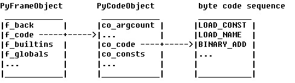

我们知道，在Windows下，编译一个C/C++文件，并且链接后得到的可执行文件（如exe），在Linux下是运行不了的，反之亦然。原因是源文件通过不同系统的编译器转换得出的机器指令会有所不同，而它们链接组织成一个可执行文件时，文件的结构也不同。Python与之不同，它不是通过源代码转换成机器指令来执行的。实际上，Python跟Java一样，它的执行原理可以用两个词囊括：虚拟机、字节码。Python把py代码转换成字节码，然后交给虚拟机一条一条执行（实际上当然不是所有指令都得以执行，因为程序中充斥着各种控制流）。就是这个原理，使得Python程序具有跨平台的优点（要说点什么不好，那就是它必须依靠“Python虚拟机”这个平台）。
Python的字节码，假如无参数的，其实就是一个char，占一个字节；假如带参数，参数占两个字节，那么它就为三个字节。执行下面这段代码，可以看看它们到底有哪些：
import opcode
for op in range(len(opcode.opname)):
#显示为“16进制(10进制): 字节码名字”
print('0x%.2X(%.3d): %s' % (op, op, opcode.opname[op]))
"""
输出结果：
0x00(000): STOP_CODE
0x01(001): POP_TOP
0x02(002): ROT_TWO
...
"""
这里，选一个介绍一下。例如“0x64(100): LOAD_CONST”，虚拟机看到“0x64”，它就会找到LOAD_CONST对应的C代码：
x = GETITEM(consts, oparg);
Py_INCREF(x);
PUSH(x);
这个字节码要干什么不是我们的重点，但从它的名字和C代码可窥一斑，至于它是如何根据“0x64”找到这段代码的，这里先卖个关子，留到虚拟机框架的部分一拼讲解（其实想想都知道，不是switch...case就是一堆if...else）。
字节码不是单独暴露在外的实体，它被封装在PyCodeObject里，而PyCodeObject除了它之外，还包含其它一些信息，例如表示常量的co_consts、表示符号的co_names等等。一个PyCodeObject对应一个CodeBlock，而划分一个CodeBlock的就只有类、函数和module，除此之外再无其它（如果从名字空间对应CodeBlock来理解，可能会更深刻）。
说到这里，其实还只是在说pyc文件（Python源代码编译后的静态结果），至于Python程序运行的时候，怎样进行PyCodeObject里面的所有动作呢？我们需要引进一个执行环境的概念——PyFrameObject。在Python执行时，虚拟机真正面对的是一个叫PyFrameObject的结构（我们称之为“栈帧frame”），它里面除了包含一个指向PyCodeObject的指针，还包含名字空间、栈顶栈底指针、执行环境链上的前一个frame（f_back指针）等等各种运行时候需要的信息。下面是书中的例子（经修改），演示如何获得当前的frame，以及调用者的frame：
import sys
value = 3
frame = sys._getframe()
print "in global frame : ", frame.f_code.co_name
def g():
frame = sys._getframe()
print 'current function is : ', frame.f_code.co_name
caller = frame.f_back
print 'caller function is : ', caller.f_code.co_name
print "caller's local namespace : ", caller.f_locals
print "caller's global namespace : ", caller.f_globals.keys()
def f():
frame = sys._getframe()
caller = frame.f_back
print "caller of f : ", caller.f_code.co_name
a = 1
b = 2
g()
def show():
frame = sys._getframe()
caller = frame.f_back
print "caller of show : ", caller.f_code.co_name
f()
show()
"""
输出结果：
in global frame : <module>
caller of show : <module>
caller of f : show
current function is : g
caller function is : f
caller's local namespace : {'a': 1, 'frame': <frame object at 0x92be4dc>, 'b': 2, 'caller': <frame object at 0x92be384>}
caller's global namespace : ['g', 'f', '__builtins__', '__file__', 'show', 'value', 'sys', 'frame', '__name__', '__doc__']
"""
说到这里，关系有点复杂了，先用一个图总结一下字节码序列（byte code sequence）、PyCodeObject、PyFrameObject三者之间的关系吧：

讲完执行环境，应该要描述一下Python虚拟机的运行框架了。在Python启动后，首先会进行运行时环境的初始化（运行时环境是全局的概念，如进程、线程，它不同于执行环境，而执行环境针对的是某个CodeBlock的栈帧的描述），然后进入一个叫PyEval_EvalFramEx的函数，它其实就是Python虚拟机的具体实现：
PyObject* PyEval_EvalFrameEx(PyFrameObject *f, int throwflag)
{
//初始化一些变量，例如PyFrameObject里面的PyCodeObject所包含的重要对象，还有栈顶指针等
co = f->f_code;
names = co->co_names;
consts = co->co_consts;
...
stack_pointer = f->f_stacktop;
...
why = WHY_NOT; //记录异常的变量，初始化为“WHY_NOT”，无异常
...
for(;;){//一条一条执行字节码的大循环
...
fast_next_opcode:
f->f_lasti = INSTR_OFFSET();
//获得字节码指令
opcode = NEXTOP();//其实就是“*next_instr++”，取下条指令，指针后移
oparg = 0;
if (HAS_ARG(opcode))//带参数的字节码
/* next_instr += 2,(next_instr[-1]<<8) + next_instr[-2]),
指针后移2位，并把参数赋给oparg，注意哪个是高位，哪个是低位
*/
oparg = NEXTARG();
dispatch_opcode:
switch (opcode) {//看到了吗，果然是switch
//根据不同的字节码编号，进入相应的C代码段执行
case NOP:
goto fast_next_opcode;
case LOAD_FAST:
...
}
...
}
从这个函数的大致框架，我们可以看出Python是怎样执行一个PyFrameObject中的字节码的、首先进来先设置栈顶指针，设置第一条指令的指针、下一条指令指针，设置记录异常的变量等等工作。然后进入巨大的for循环。在这个循环里，每次获取一条字节码，然后根据其号码（switch），找到相应的C代码段（case），进而执行相应的动作。
这里描述的，是执行某个CodeBlock的动作（上面假设是一开始时的CodeBlock，也就是module），假如发生了函数调用，那怎么办呢？事实上，PyEval_EvalFrameEx这个函数是会被递归调用的，我们看看它的参数PyFrameObject，PyFrameObject包含一个变量f_back，当发生函数调用时，Python虚拟机会创建一个与被调用函数对应的PyFrameObject对象，并且把该对象的f_back指向调用者对应的PyFrameObject对象，形成一个链结构。既然PyFrameObject有一个链结构，PyEval_EvalFrameEx也只能通过递归的方式与之对应了。
讲到这里，Python虚拟机的大体框架应该出来了，至于它如何实现控制流、函数机制、类机制这些，这里不再展开了。